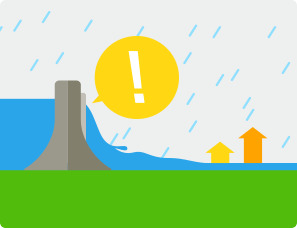

댐붕괴
댐붕괴 발생 시 사전에 충분히 습득해서 재난이 발생하였을 때 피해를 최소화할 수 있도록 대비하시기 바랍니다.

- 댐 붕괴 우려 시
- 댐 붕괴 징후(대규모 홍수 및 지진 발생시)가 발생할 경우, 댐관리기관-지자체-정부에서
경고방송 및 재난방송을 실시하므로 TV, 라디오, 인터넷 등을 통해 재난상황을 지속적으로
주의 깊게 확인합니다.
- 침수에 대비하여 가스를 잠그고 전기제품의 전원을 끄고, 집 주변에 있는 물건을 치우거나
고정시켜두며, 중요한 물건은 높은 곳으로 옮깁니다.
- 지역 재난안전대책본부 및 경찰서, 소방서 등 주요기관들의 전화번호를 확인하고
온 가족이 알 수 있는 곳에 두고, 지역 주민(마을대표 등)간의 비상연락망을 유지합니다.
- 지역 재난안전대책본부를 통하 댐 붕괴 시 해당지역의 비상대피장소를 미리 확인하고
동선(대피로)과 대피방법을 확인합니다.
- 댐 붕괴 발생 시
- 댐 붕괴가 발생시 지역재난안전대책본부의 통제에 따라 지정된 장소로 즉시 대피합니다.
- 대피장소로 이동할 시간적 여유가 없을 경우에는 주변의 고지대로 비상대피하고
지역재난안전대책본부 또는 소방서, 경찰서 등에 구조를 요청합니다.
- 댐 붕괴로 인한 홍수에는 붕괴된 구조물 조각들과 토석류들이 쓸려서 내려오므로,
절대 하천에 접근하지 않도록 합니다.
- 대규모 지진으로 인한 댐 붕괴시에는, 추가 여진등으로 인한 2차 피해가 발생할 수 있으므로,
건물이나 제방 인근으로 접근하지 않도록 합니다.
- 강우가 지속될 경우에는 신속한 피해복구 및 물자지원가 어려울 수 있으므로,
확보하고 있는 물자는 아껴서 사용합니다.
- 물이 빠진 후
- 침수로 인하여 지반 및 도로가 약해져서 붕괴위험이 있으므로, 재난안전본부 등의
별도 안내가 있기 전까지 무분별한 이동을 자제하며, 안전이 확인된 이후 이동 및 귀가합니다.
- 집에 도착한 후에도 붕괴 가능성을 사전에 점검하고 들어가야 하며, 이상이 의심될 경우에는
재난안전본부 및 소방서 등에 점검을 요청합니다.
- 집이 파손되었을 경우에는 임시대피소로 이동하고 재난관리기관에 복구지원을 요청합니다.
Q & A
 Q. 댐 붕괴가 발생할 경우, 관련정보는 어떻게 확인할 수 있습니까?
Q. 댐 붕괴가 발생할 경우, 관련정보는 어떻게 확인할 수 있습니까?- A. 댐 관리 기관에서는 댐 상황을 모니터링하고, 붕괴 가능성이 있을 경우 기관별로 다중화하여 아래와 같이 정보를 제공하고 있습니다.
- 대규모 홍수 및 지진 발생 시에는 신속히 내용을 확인하시고 지역 재난안전대책본부의 지시에 따라 대피하셔야 합니다.
- - 댐 관리기관 : 댐 직하류 경보방송 실시,
- - 지자체 : 방송사 및 언론사를 통한 재난방송(자막) 송출
- - 정부(행정안전부) : 대국민 재난온라인방송 및 재난문자서비스 전송
 화재사고
화재사고